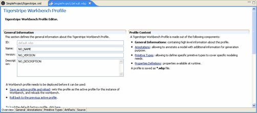

Tigerstripe Profile Perspectives
The Tigerstripe Profile Perspective has the same look and feel as the Tigerstripe Workbench Project Perspective. For detailed information about Tigerstripe Workbench Project Perspectives, refer to Documenting your Project.

For this example, name your Tigerstripe Profile (simpleProfile), enter the version information (1.0), and a short description.
A Tigerstripe Project Profile contains multiple sources of information that display on individual tabs including:
- The General tab which allows you to control the OSS/J Legacy settings. This is where you can disable the OSS/J Legacy plug-ins available with Tigerstripe Workbench. For more information, refer to The General Tab.
- The Annotation tab which allows you to include additional information with your Tigerstripe model. Project annotations are useful for triggering different behaviors at project generation. For more information, refer to The Annotation Tab.
- The Primitive-Type tab which allows you to include additional primitive types with your project. Tigerstripe Worbench is delivered with default primitive types. The project specific primitive types you define become available after you deploy your project. For more information, refer to The Primitive-Type Tab.
- The Artifacts tab which allows you to control the artifacts available with the Tigerstripe Artifacts palatte. For example, if you know that users of the model will not be utilizing queries, you can disable the query artifact from the Tigerstripe palatte. These changes will become active after you deploy your project. For more information, refer to The Artifacts Tab.
- The Source tab which allows you to view the source file for your Tigerstripe Project Profile. This tab is standard with all Worbench Perspectives.
Note: It is best to NOT modify the Source file for your Tigerstripe Project Profile. This tab should be used with extreme caution and under the support of the Tigerstripe team.
Related Topics
-->The General Tab
The Annotation Tab
The Primitive-Type Tab
The Artifacts Tab
Deploying your Profile
Project Profiles
Rolling Back
Loading Factory Defaults
 The General Tab
The General Tab
© copyright 2005, 2006, 2007 Cisco Systems, Inc. - All rights reserved